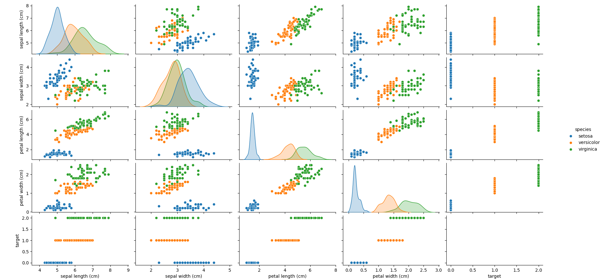
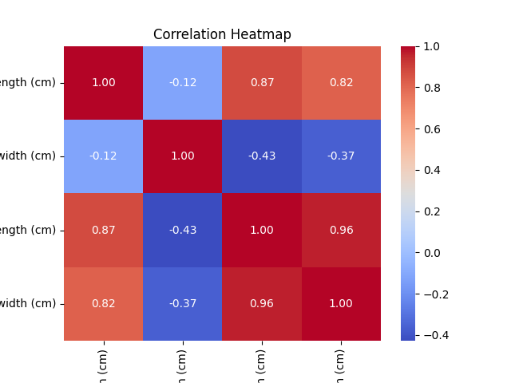

Sklearn 応用事例
アイリスデータセット（Iris Dataset）は、機械学習で最も古典的な入門データセットの1つです。
アイリスデータセットには、3種類のアイリス（Setosa、Versicolor、Virginica）のそれぞれについて、4つの特徴量（がく片の長さ、がく片の幅、花びらの長さ、花びらの幅）が含まれています。
次に、私たちのタスクはこれらの特徴量に基づいてアイリスの種類を予測することです。
この章の事例では、データの読み込み、可視化、特徴量の選択、データ前処理、分類モデルの構築、モデルの評価と最適化などの手順を扱います。
1、データの読み込みと可視化
データの読み込み
まず、アイリスデータセットを読み込みます。scikit-learn にはアイリスデータセットを直接読み込むインターフェースが用意されています。
例
import pandas as pd
# アイリスデータセットを読み込む
data = load_iris()
# DataFrameに変換して表示しやすくする
df = pd.DataFrame(data.data, columns=data.feature_names)
df['target'] = data.target
df['species'] = df['target'].apply(lambda x: data.target_names[x])
# 先頭の数行を表示する
print(df.head())
出力結果：
sepal length (cm) sepal width (cm) petal length (cm) petal width (cm) target species 0 5.1 3.5 1.4 0.2 0 setosa 1 4.9 3.0 1.4 0.2 0 setosa 2 4.7 3.2 1.3 0.2 0 setosa 3 4.6 3.1 1.5 0.2 0 setosa 4 5.0 3.6 1.4 0.2 0 setosa
この時点で、データは正常に読み込まれ、各データの特徴量と対応する花の種類を確認できます。
データの可視化
データをよりよく理解するために、可視化を通じて異なる特徴量間の関係を確認できます。matplotlib と seaborn ライブラリを使用して可視化を行えます。
例
import pandas as pd
import seaborn as sns
import matplotlib.pyplot as plt
# アイリスデータセットを読み込む
data = load_iris()
# DataFrameに変換して表示しやすくする
df = pd.DataFrame(data.data, columns=data.feature_names)
df['target'] = data.target
df['species'] = df['target'].apply(lambda x: data.target_names[x])
# 特徴量間の関係をプロットする
sns.pairplot(df, hue="species")
plt.show()
pairplot は特徴量間の散布図マトリックスを描画し、異なるアイリスの種類を異なる色で識別します。これにより、各特徴量の分布と相互関係を理解するのに役立ちます。
図は以下のとおりです：

ヒートマップによる特徴量間の相関の可視化
ヒートマップを使用すると、特徴量間の相関を確認できます。強い相関は、モデル構築時に適切な選択を行うのに役立ちます。
例
import pandas as pd
import seaborn as sns
import matplotlib.pyplot as plt
# アイリスデータセットを読み込む
data = load_iris()
# DataFrameに変換して表示しやすくする
df = pd.DataFrame(data.data, columns=data.feature_names)
df['target'] = data.target
df['species'] = df['target'].apply(lambda x: data.target_names[x])
# 特徴量間の関係をプロットする
correlation_matrix = df.drop(columns=['target', 'species']).corr()
sns.heatmap(correlation_matrix, annot=True, cmap="coolwarm", fmt=".2f")
plt.title("Correlation Heatmap")
plt.show()
図は以下のとおりです：

2、特徴量の選択とデータ前処理
データ前処理
機械学習において、データ前処理は非常に重要なステップです。
アイリスデータセットの場合、特徴量はすでに数値データであるため、多くの前処理は必要ありません。ただし、モデルの学習効果を高めるためにデータを標準化できます。
例
# 特徴量とラベルを抽出
X = df.drop(columns=['target', 'species'])
y = df['target']
# 特徴量を標準化
scaler = StandardScaler()
X_scaled = scaler.fit_transform(X)
標準化の目的は、各特徴量の平均を0、分散を1にすることです。これは距離に基づくモデル（KNN、SVMなど）にとって非常に重要です。
特徴量の選択
アイリスデータセットの特徴量は比較的単純ですが、実際の問題では、特徴量の次元を減らしてモデルのパフォーマンスを向上させるために、特徴量の選択が必要になることがあります。
SelectKBest や Recursive Feature Elimination (RFE) などの方法を使用できます。
例えば、SelectKBest を使用して、ラベルと最も関連性の高い2つの特徴量を選択します：
例
# カイ二乗検定を使用して、最も関連性の高い2つの特徴量を選択
selector = SelectKBest(f_classif, k=2)
X_new = selector.fit_transform(X_scaled, y)
# 選択された特徴量を出力
selected_features = selector.get_support(indices=True)
print("Selected features:", X.columns[selected_features])
これにより、ターゲットラベルとの相関が最も高い2つの特徴量が選ばれます。
3、分類モデルの構築：決定木またはSVMを使用した分類
決定木分類器の使用
まず、決定木（Decision Tree）モデルを使用して分類を試みます。
例
from sklearn.tree import DecisionTreeClassifier
from sklearn.metrics import accuracy_score
# データセットを分割
X_train, X_test, y_train, y_test = train_test_split(X_scaled, y, test_size=0.2, random_state=42)
# 決定木分類器を初期化
model_dt = DecisionTreeClassifier(random_state=42)
# モデルを学習
model_dt.fit(X_train, y_train)
# 予測
y_pred_dt = model_dt.predict(X_test)
# モデルを評価
accuracy_dt = accuracy_score(y_test, y_pred_dt)
print(f"Decision Tree Accuracy: {accuracy_dt:.4f}")
サポートベクターマシン（SVM）を使用した分類
次に、サポートベクターマシン（SVM）を使用して分類を試みます。
例
# SVM分類器を初期化
model_svm = SVC(kernel='linear', random_state=42)
# モデルを学習
model_svm.fit(X_train, y_train)
# 予測
y_pred_svm = model_svm.predict(X_test)
# モデルを評価
accuracy_svm = accuracy_score(y_test, y_pred_svm)
print(f"SVM Accuracy: {accuracy_svm:.4f}")
4、モデルの評価と最適化
モデル評価
精度に加えて、混同行列、適合率、再現率、F1スコアなどの他の評価指標も使用できます。
例
# 混同行列
cm = confusion_matrix(y_test, y_pred_dt)
print("Confusion Matrix (Decision Tree):")
print(cm)
# 適合率、再現率、F1スコア
report = classification_report(y_test, y_pred_dt)
print("Classification Report (Decision Tree):")
print(report)
グリッドサーチによるチューニング
モデルを最適化するために、グリッドサーチ（GridSearchCV）を使用してモデルのハイパーパラメータをチューニングし、最適なパラメータの組み合わせを見つけることができます。
例
# 決定木のパラメータグリッドを定義
param_grid = {
'max_depth': [3, 5, 10, None],
'min_samples_split': [2, 5, 10],
'min_samples_leaf': [1, 2, 4]
}
# GridSearchCVを初期化
grid_search = GridSearchCV(estimator=DecisionTreeClassifier(random_state=42), param_grid=param_grid, cv=5)
# グリッドサーチを実行
grid_search.fit(X_train, y_train)
# 最適なパラメータと最適なモデルを取得
print("Best Parameters:", grid_search.best_params_)
best_model = grid_search.best_estimator_
# 予測と評価
y_pred_optimized = best_model.predict(X_test)
accuracy_optimized = accuracy_score(y_test, y_pred_optimized)
print(f"Optimized Decision Tree Accuracy: {accuracy_optimized:.4f}")
グリッドサーチを使用することで、現在のデータに最も適した決定木のパラメータを見つけ、モデルの予測精度を向上させることができます。
交差検証
モデルの安定性をさらに評価するために、交差検証を使用してモデルのパフォーマンスを評価できます。
例
# 5分割交差検証を実行
cross_val_scores = cross_val_score(best_model, X_scaled, y, cv=5)
print(f"Cross-validation Scores: {cross_val_scores}")
print(f"Mean CV Accuracy: {cross_val_scores.mean():.4f}")
交差検証は、異なるデータサブセットでのモデルのパフォーマンスを評価し、モデルの過学習を防ぐのに役立ちます。
5、完全なコード
以下は、アイリスデータセットの読み込み、データ前処理、特徴量の選択、分類モデルの構築、モデルの評価と最適化などの手順を網羅した完全なコード例です。決定木とSVM分類器を使用し、グリッドサーチでモデルのハイパーパラメータを最適化します。例
import numpy as np
import pandas as pd
import seaborn as sns
import matplotlib.pyplot as plt
from sklearn.datasets import load_iris
from sklearn.model_selection import train_test_split, GridSearchCV, cross_val_score
from sklearn.preprocessing import StandardScaler
from sklearn.tree import DecisionTreeClassifier
from sklearn.svm import SVC
from sklearn.metrics import accuracy_score, classification_report, confusion_matrix
# 1. データの読み込み
# アイリスデータセットを読み込む
data = load_iris()
# DataFrameに変換して表示しやすくする
df = pd.DataFrame(data.data, columns=data.feature_names)
df['target'] = data.target
df['species'] = df['target'].apply(lambda x: data.target_names[x])
# 先頭の数行を表示する
print("データプレビュー：")
print(df.head())
# 2. データの可視化
# 特徴量間の関係をプロットする
sns.pairplot(df, hue="species")
plt.show()
# ヒートマップを描画して特徴量間の相関を確認する
correlation_matrix = df.drop(columns=['target', 'species']).corr()
sns.heatmap(correlation_matrix, annot=True, cmap="coolwarm", fmt=".2f")
plt.title("Correlation Heatmap")
plt.show()
# 3. 特徴量の選択とデータ前処理
# 特徴量とラベルを抽出
X = df.drop(columns=['target', 'species'])
y = df['target']
# データの標準化
scaler = StandardScaler()
X_scaled = scaler.fit_transform(X)
# 4. 分類モデルの構築
# データセットを分割
X_train, X_test, y_train, y_test = train_test_split(X_scaled, y, test_size=0.2, random_state=42)
# 決定木分類器を使用
model_dt = DecisionTreeClassifier(random_state=42)
model_dt.fit(X_train, y_train)
# 予測
y_pred_dt = model_dt.predict(X_test)
# 決定木の精度を出力
accuracy_dt = accuracy_score(y_test, y_pred_dt)
print(f"Decision Tree Accuracy: {accuracy_dt:.4f}")
# サポートベクターマシン（SVM）分類器を使用
model_svm = SVC(kernel='linear', random_state=42)
model_svm.fit(X_train, y_train)
# 予測
y_pred_svm = model_svm.predict(X_test)
# SVMの精度を出力
accuracy_svm = accuracy_score(y_test, y_pred_svm)
print(f"SVM Accuracy: {accuracy_svm:.4f}")
# 5. モデル評価
# 決定木モデルの評価
print("\nDecision Tree Classification Report:")
print(classification_report(y_test, y_pred_dt))
print("\nDecision Tree Confusion Matrix:")
print(confusion_matrix(y_test, y_pred_dt))
# SVMモデルの評価
print("\nSVM Classification Report:")
print(classification_report(y_test, y_pred_svm))
print("\nSVM Confusion Matrix:")
print(confusion_matrix(y_test, y_pred_svm))
# 6. グリッドサーチによるチューニング
# 決定木のパラメータグリッドを定義
param_grid = {
'max_depth': [3, 5, 10, None],
'min_samples_split': [2, 5, 10],
'min_samples_leaf': [1, 2, 4]
}
# GridSearchCVを初期化
grid_search = GridSearchCV(estimator=DecisionTreeClassifier(random_state=42), param_grid=param_grid, cv=5)
grid_search.fit(X_train, y_train)
# 最適なパラメータと最適なモデルを取得
print("\nBest Parameters from GridSearchCV (Decision Tree):")
print(grid_search.best_params_)
# 最適なモデルを使用して予測
best_model = grid_search.best_estimator_
y_pred_optimized = best_model.predict(X_test)
# 最適化後の決定木の精度を出力
accuracy_optimized = accuracy_score(y_test, y_pred_optimized)
print(f"Optimized Decision Tree Accuracy: {accuracy_optimized:.4f}")
# 7. 交差検証
# 5分割交差検証を実行
cross_val_scores = cross_val_score(best_model, X_scaled, y, cv=5)
print("\nCross-validation Scores (Optimized Decision Tree):")
print(cross_val_scores)
print(f"Mean CV Accuracy: {cross_val_scores.mean():.4f}")
コードの解説：
データの読み込み：
- 使用
load_iris()アイリスデータセットを読み込み、データをDataFrame形式に変換することで、表示と分析が容易になります。
- 使用
データの可視化：
- 使用して
seaborn的pairplot各特徴量間の散布図マトリックスを描画し、heatmap特徴量間の相関ヒートマップを描画します。
- 使用して
特徴量の選択とデータ前処理：
- 特徴量を抽出（
X）とラベル（y）、特徴データに対して標準化処理を行い、各特徴の平均が0、分散が1になるようにする。
- 特徴量を抽出（
分類モデルを構築する：
- 使用
DecisionTreeClassifier和SVCそれぞれ決定木分類器とサポートベクターマシン分類器を訓練し、テストセット上での精度を評価する。
- 使用
モデル評価：
- 使用
classification_report和confusion_matrixモデルの詳細な評価指標を出力する。精度、再現率、F1スコア、混同行列を含む。
- 使用
グリッドサーチによるチューニング：
- 使用
GridSearchCV決定木モデルのハイパーパラメータをチューニングし、最適なハイパーパラメータの組み合わせを探し、最適化後のモデルの精度を出力する。
- 使用
交差検証：
- 使用
cross_val_score5分割交差検証を行い、最適化後の決定木モデルの安定性と性能を評価する。
- 使用
出力は以下の通り：
数据预览：
sepal length (cm) sepal width (cm) petal length (cm) petal width (cm) target species
0 5.1 3.5 1.4 0.2 0 setosa
1 4.9 3.0 1.4 0.2 0 setosa
2 4.7 3.2 1.3 0.2 0 setosa
3 4.6 3.1 1.5 0.2 0 setosa
4 5.0 3.6 1.4 0.2 0 setosa
Decision Tree Accuracy: 1.0000
SVM Accuracy: 1.0000
Decision Tree Classification Report:
precision recall f1-score support
0 1.00 1.00 1.00 9
1 1.00 1.00 1.00 8
2 1.00 1.00 1.00 8
accuracy 1.00 25
macro avg 1.00 1.00 1.00 25
weighted avg 1.00 1.00 1.00 25
Decision Tree Confusion Matrix:
[[9 0 0]
[0 8 0]
[0 0 8]]
SVM Classification Report:
precision recall f1-score support
0 1.00 1.00 1.00 9
1 1.00 1.00 1.00 8
2 1.00 1.00 1.00 8
accuracy 1.00 25
macro avg 1.00 1.00 1.00 25
weighted avg 1.00 1.00 1.00 25
SVM Confusion Matrix:
[[9 0 0]
[0 8 0]
[0 0 8]]
Best Parameters from GridSearchCV (Decision Tree):
{'max_depth': 5, 'min_samples_leaf': 1, 'min_samples_split': 2}
Optimized Decision Tree Accuracy: 1.0000
Cross-validation Scores (Optimized Decision Tree):
[1. 1. 1. 1. 1. ]
Mean CV Accuracy: 1.0000
その他の拡張
クリックしてノートを共有
<p style="font-size:14px;">ノートはこの記事の内容の拡張である必要があります！</p><br> <p style="font-size:12px;"><a href="../tougao.html" target="_blank">記事投稿は、こちらをクリックしてください</a></p> <p style="font-size:14px;"><a href="../w3cnote/runoob-user-test-intro.html" target="_blank">登録招待コードの取得方法</a></p> <h3 class="text-muted"><i class="fa fa-info-circle" aria-hidden="true"></i> ノートを共有する前に必ず<a href=";.html" class="runoob-pop">ログイン</a>！</h3> <p><a href="../w3cnote/runoob-user-test-intro.html" target="_blank">登録招待コードの取得方法</a></p>